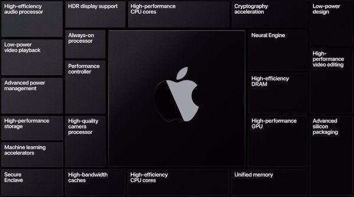
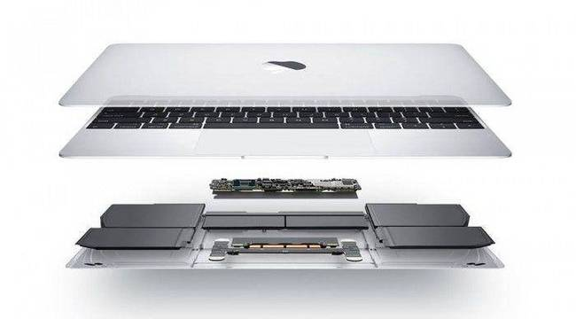
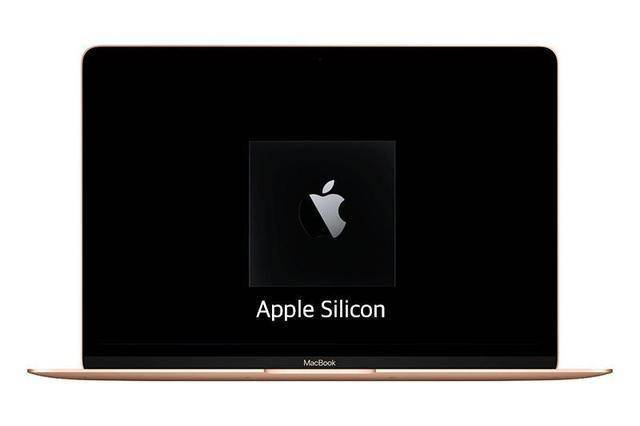

苹果将会在近日举行发布会推出iPhone 12系列，根据媒体经济日报的报道，在发布会之后，苹果还将于11月再度举行新品发布会，主角则是搭载了苹果自研芯片Apple Silicon的MacBook。固态媒体表示，该芯片是由台积电独家代工的，而笔记本电脑零件组装厂则是广达。

根据彭博社记者Mark Gurman的透露，苹果首款搭载了自研芯片Apple Silicon的MacBook将于11月发布，而知名苹果分析师郭明錤也曾表示苹果的首款ARM架构Mac电脑将会是13英寸的MacBook Pro。

根据郭明錤在7月份发布的报告，苹果在未来预计会发布采用Apple Silicon的13英寸MacBook Pro（今年Q4量产）、采用Apple Silicon的MacBook Air、采用Apple Silicon的14英寸/16英寸MacBook Pro。

关于苹果的首款自研芯片Apple Silicon，外媒WccfTech曾经表示其具有8个性能核心+4个效率核心，而13英寸的 MacBook Pro将会首发这款芯片。